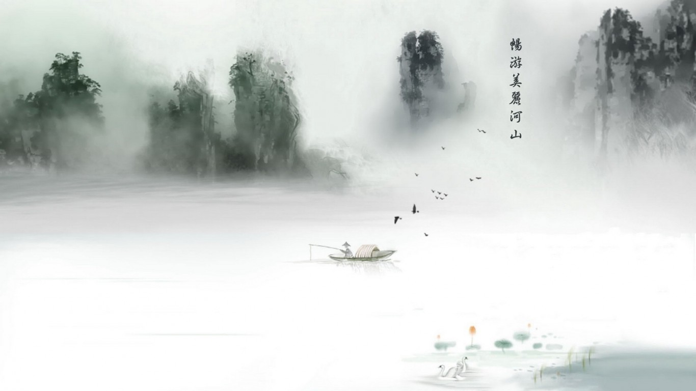

Boom boom, knas bre, skott på hus fasaden. Ungarna kör fullt ut dom trampar på pedalen. Det går wrom wrom, knas len, Ännu en bregaven Slummen den e sjuk den smittar mig och gör mig galen Ey yo vakna, varning, upplopp i staden Folket kokar över tänder eld på riksdagen Och massa vapen snurrar runt bland barnen och droger och våld har bilvit en del av vardagen Ey, jag kan inte sova något mer Allting går upp för mig när solen går ner Kan inte drömma mig bort Jag ser problem under mitt ögonlock Jag kan inte sova något mer Allting går upp för mig när solen går ner Kan inte drömma mig bort. Jag kan inte sluta loopa Stänger ögonen och ser dom svarta molnen hopas Undrar varför vägen ska vara fylld ut av gropar Vi växer upp med känslan av att ha förlorat, Ser du vart de rotas, o jag svarar Tjoja, ser var du ser, Yo jag ser hur hatet fordas Droger i området ser min broder överdosa, Ser du hur dom planerar, kalkylerar varje move, ja. Förvandlar oss till bovar Mannen, e dom kloka, plundrar dom unga och springer ifrån notan Vad ska dom ta vägen nu när gården är skrotad, Jotman sitter slagen och hotad, i handklovar Ey yo bror ja, jag ser hur små problem blir stora Mammas tårar rinner ner från kinden när hon ropar Ännu en begraven som dog där han var bosatt Vi blundar och slippa se men det går inte att snooza nej. För, jag kan inte sova något mer Allting går upp för mig när solen går ner Kan inte drömma mig bort Jag ser problem under mitt ögonlock Jag kan inte sova något mer Allting går upp för mig när solen går ner Kan inte drömma mig bort. När solen går ner, börjar gamarna cirkulera Grisarna spanar och vargarna blir flera Varmt blod blir kallt när drogerna förorenar Vapen blir flera och våldet eskalerar Överallt ser man folk som skenar, från centrum ut till stadens grenar Själen har blivit bort prioriterad, Men det är ingenting media spelar. Yo vi har vissnat in i roten, står här ute o florerar där dom lägger upp taktiken hur dom ska spela åh vi är ba brickor i spelet, inget mera På botten av en pyramid där liv inte värderas Åh stress tynger mig som ett ton stenar Jag går och väntar på detonera Det måste finnas andra sätt o leva I mina drömmar ser jag ett folk enat! Nej, jag kan inte sova något mer Allting går upp för mig när solen går ner Kan inte drömma mig bort Jag ser problem under mitt ögonlock Jag kan inte sova något mer Allting går upp för mig när solen går ner Kan inte drömma mig bort.